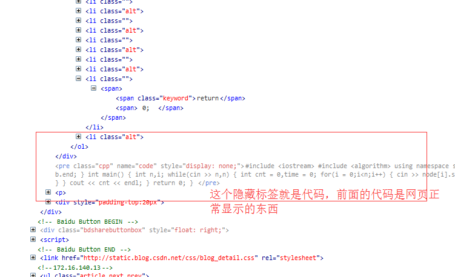
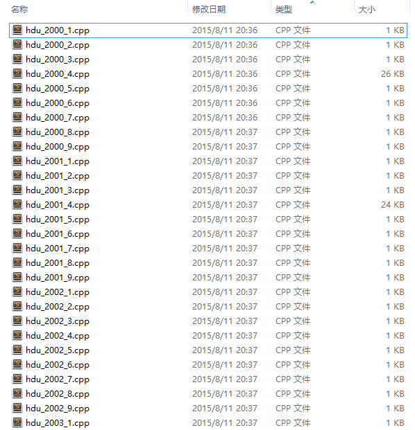
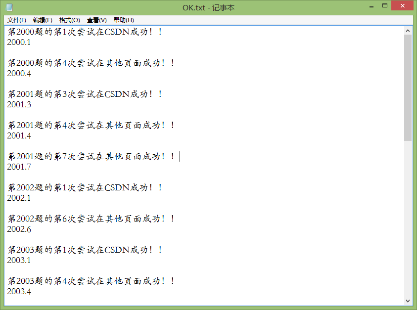
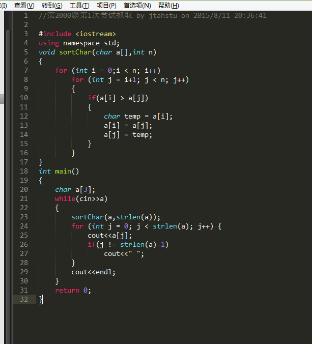

AC自动机之C#网页爬虫2.0(第二天总结)
第一天的时候我们已经得到了百度搜索后的链接，今天我们利用链接跳转到目标结果页中，在这个页面中就有我们梦寐以求的题目代码了，我们最终的目标就是要拿到代码，保存为文件，显然目标是伟大的，但现实是残酷的。
我们知道网页的代码是混合html、css、js等等标注或脚本语言的，那么在光鲜的网页背后，其代码也是杂而乱的，不同的页面其呈现的规则是不同的，处理我们的目标代码也是不同的，这就造成了极大的困难，我们对之处理也相当不容易，能拿到有效代码的概率也大大的降低，目前最好的成绩就是一道题9个链接拿到5个完整有效的代码，少的可能就1个到2个这样，这是常规现象，可能有的题别人写的题解较少，然后解析又有问题，最后一个也没有拿到，这样的并不在少数。
好，废话不多说，开始讲解怎么处理杂而乱的代码获取我们想要的东西，go
首先处理来自CSDN的题解，这个网站的题解相当的多，所以他是首选目标，也是必须处理地网页，其他的都可以降权，他优先。
在阅读大量的目标CSDN网页源代码之后本人惊奇的发现，csdn在呈现代码时，其下面有一个隐藏的标签，这个标签就是没有加样式的目标代码，咦，这恰恰不就是我们想要的吗，立马爬取之。

像上图这个样子，是不是好神奇？哈哈，我也被吓一跳呢。
然后第二优先级的就是博客园的目标页面，首先表示本人爬取失败了，种种原因吧，前面都处理的很好，最后死在怎么去掉行号的这个问题了，标签都完美的去掉了，唉，这里是个败笔。
所以博客园的目标网页只能忍痛放弃之。
好,前两个是大头也是目标页最多的地方，后面这个处理来自其他网页的目标，例如新浪博客，百度知道这些网页。
首先就是截取目标代码段，这里包含许多的其他东西，我们先去标签，因为这些网页都是没有行号的，不然又得像博客园那样忍痛放弃了。
然后只要前面截取的正确，然后去标签之后就拿到完美的题目代码了，本人将其保存为对应的文件，并在标记文件中加入哪道题哪次请求成功了，在接下来的几天中我们还要用到这个文件来索引。
上代码，已经可以处理部分网页爬取代码了。
using System;
using System.Collections.Generic;
using System.Linq;
using System.Text;
using System.Threading.Tasks;
using System.IO;
using System.Net;
using System.Text.RegularExpressions;
namespace 提取代码 {
class Program {
/// < summary>
/// 获取页面中的代码
///
/// < param name="s">
/// < returns>
static string Getcode(string s,int i,int x) {//s为传递来的结果页面
string s1 = "< pre class", s2 = "", s3 = "< pre name=";
if (s.IndexOf("csdn") > 0) {
Console.WriteLine("进入到csdn结果页中了...");
int code_start = s.IndexOf(s1);
if (code_start == -1) code_start = s.IndexOf(s3);
int code_end = s.IndexOf(s2, code_start + 1);
int code_l = code_end - code_start + 1;
if (code_l > 10 && code_start > 10) {
string ans = s.Substring(code_start, code_l - 1);
ans = ans.Replace("<", "<");
ans = ans.Replace(">", ">");
ans = ans.Replace(""", "\"");
ans = ans.Replace("&", "&");
ans = ans.Replace(" ", " ");
ans = ans.Replace("#43;", "+");
ans = ans.Replace("#39", "'");
//Console.WriteLine(ans);< pre class="cpp" name="code">< pre class="html" name="code">
ans = ans.Replace("< pre name=\"code\" class=\"cpp\">", "\r\n");
ans = ans.Replace("< pre class=\"cpp\" name=\"code\">", "\r\n");
ans = ans.Replace("< pre class=\"html\" name=\"code\">", "\r\n");
string w = @"G:\ACM\OJ\OK.txt";
StreamReader rr = new StreamReader(w);
string sr = rr.ReadToEnd();
rr.Close();
StreamWriter wr = new StreamWriter(w);
wr.WriteLine(sr+"第{0}题的第{1}次尝试在CSDN成功！！\r\n{2}.{3}\r\n", i, x,i,x);
wr.Flush();
wr.Close();
return ans;
} else return "//进去csdn了，但没找到代码...\r\n//WAFile";
} else if (s.IndexOf("cnblog") > 0) {
Console.WriteLine("进入到博客园结果页中了...");
return "//WAFile";
} else if(s.IndexOf("#include")>0){
Console.WriteLine("进入到其他结果页中了...");
string index1 = "#include", index2 = "return 0;";
int start_code = s.IndexOf(index1);
int end_code1 = s.IndexOf(index2);
if (end_code1 > 10) {
int end_code = s.IndexOf("}", end_code1);
int l_code = end_code - start_code + 1;
string ans = s.Substring(start_code, l_code);
string code = "";
bool left = false;
ans = ans.Replace("< br />", "\r\n");
for (int j = 0; j < ans.Length; j++) {
if (ans[j] == '<') left = true;
else if (ans[j] == '>') left = false;
else if (left == false) code += ans[j];
}
code = code.Replace("<", "<");
code = code.Replace(">", ">");
code = code.Replace(""", "< br>"");
code = code.Replace("&", "&");
code = code.Replace(" ", " ");
code = code.Replace("#43", "+");
code = code.Replace("#39", "'");
string w = @"G:\ACM\OJ\OK.txt";
StreamReader rr = new StreamReader(w);
string sr = rr.ReadToEnd();
rr.Close();
StreamWriter wr = new StreamWriter(w);
wr.WriteLine(sr + "第{0}题的第{1}次尝试在其他页面成功！！\r\n{2}.{3}\r\n", i, x, i, x);
wr.Flush();
wr.Close();
if (code.IndexOf("document") > 10) return "//进去其他结果页了，但是代码返回错误";
return code;
} else {
return "//进去其他结果页了，但没找到代码";
}
}
return "//啥也没找到\r\n//WAFile";
}
static void Main(string[] args) {
int st = 0;
int en = 0;
Console.Write("请输入起始爬取题号：");
st = int.Parse(Console.ReadLine());
Console.Write("请输入终止爬取题号：");
en = int.Parse(Console.ReadLine());
for (int i = st; i <= en; i++) {
string file = @"G:\ACM\OJ\link\hdu" + i.ToString() + "题处理后链接.txt";
StreamReader re = new StreamReader(file);
string s;
int x = 1;
while ((s = re.ReadLine()) != null) {
Console.WriteLine("目前正在执行第{0}题的第{1}条链接", i, x);
System.Net.WebClient client = new WebClient();
Stream strm = client.OpenRead(s);
StreamReader sr = new StreamReader(strm);
string ss = sr.ReadToEnd();
sr.Close();
string ans = Getcode(ss,i,x);
ans = ans.Replace("<", "<");
ans = ans.Replace(">", ">");
ans = ans.Replace(""", "< br>"");
ans = ans.Replace("&", "&");
ans = ans.Replace(" ", " ");
ans = ans.Replace("#43;", "+");
ans = ans.Replace("#39", "'");
ans = "//第" + i.ToString() + "题第" + x.ToString() + "次尝试抓取 by jtahstu on " + DateTime.Now + "\r\n" + ans;
string write = @"G:\ACM\OJ\code\hdu_" + i.ToString() + "_" + (x++).ToString() + ".cpp";
StreamWriter wr = new StreamWriter(write);
wr.Write(ans);
wr.Flush();
wr.Close();
}
}
}
}
}
上图：


